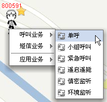
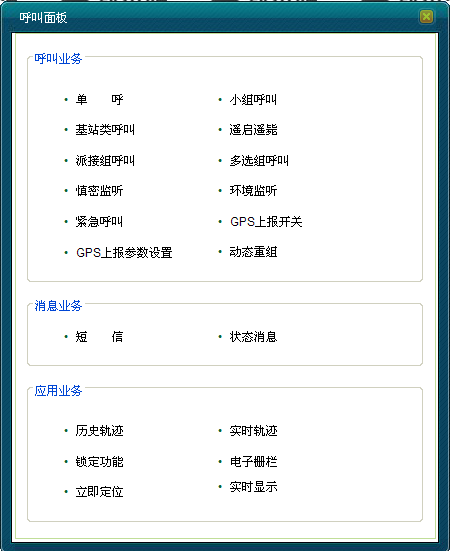
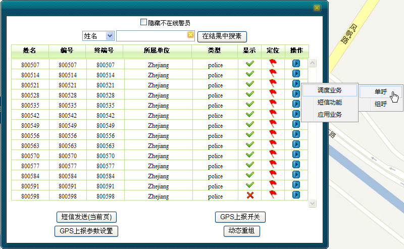
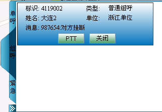

只有调度用户具有语言调度业务的权限。在进行语言调度业务操作之前，首先要确认调度用户成功登陆GIS系统。
在GIS系统中，用户可通过以下几种方法进行GIS的语音调度业务操作。
方式一：
调度员可以通过在地图上选中移动用户，右键选择呼叫业务，如下图1所示。

图1. 地图右键选择呼叫业务
方式二：
调度员可通过操作菜单栏中的调度功能，在呼叫面板上选择相应的呼叫业务，如下图2所示。

图2. 呼叫面板选择调度业务
方式三：
针对单呼和小组呼叫，调度员还可在呼叫工具栏中进行操作，如下图3所示。
图3. 呼叫工具栏中发起呼叫
方式四：
调度员还可通过框选用户，对“选中用户列表”中的某一用户进行单呼或者组呼，如图4所示。

图4. 框选用户发起呼叫
方式五：
在成员树中，调度员可以对“用户”及“终端”模块下的用户进行单呼或者组呼，对“编组”模块下的组用户进行组呼操作，对“调度台”模块下的调度台用户进行单呼操作。详见“成员树”一节。
方式六：
在呼叫日志中，调度员可单击组用户号码发起组呼，或者右键单击，在弹出的菜单中选择“小组呼叫”发起组呼；调度员也可单击个人用户号码对其发起单呼。
在消息日志中，调度员可右键单击组用户号码，在弹出的菜单中选择“小组呼叫”发起组呼；调度员右键单击个人用户号码，在弹出的菜单中可选择各种呼叫业务。详细参见“日志功能”一节。
方式七：
在本GIS系统中，若调度台接收到终端的呼叫，调度员也可在呼叫上行面板中进行接听操作，如下图5所示。

图5. 呼叫上行面板
针对已有呼叫上行记录，调度员也可在此面板中发起对该终端的呼叫，其模式由已有呼叫上行记录决定。
在本系统中，呼叫上行面板主要分为：
eTRA GIS主要的语音调度功能包括：
Copyright © 2012 Eastcom, Inc. All rights reserved. |
||